Crecimiento IA/ML
Las entidades financieras demandan cada vez mas modelos en producción
def orchestrate_model(run):
model = registry.get("champion")
if model.risk_score < 0.12:
deploy(route="prod")
register_audit(run, model)Defensa del Trabajo Fin de Master
De ejecuciones ad hoc a una arquitectura MLOps reusable, trazable y gobernada en Laboral Kutxa
El proyecto evoluciona desde una necesidad puntual hacia una forma estructurada de productivizar modelos.
Las entidades financieras demandan cada vez mas modelos en producción
Estudios apuntan a que alrededor del 80% de proyectos ML no llegan a producción
Se busca automatizar el ciclo de vida de los modelos
| ODS 9 | Industria, innovacion e infraestructura: industrializacion reusable de modelos con contratos, componentes y pipelines estructurados. |
|---|---|
| ODS 8 | Trabajo decente y crecimiento economico: reduccion de retrabajo tecnico y de tareas manuales repetitivas mediante automatizacion MLOps. |
| ODS 16 | Paz, justicia e instituciones solidas: trazabilidad auditable de ejecuciones, versiones y decisiones para reforzar transparencia operativa. |
Plataforma MLOps corporativa sobre Azure.
Separacion por entornos DEV, PRE y PRO.
Datastore y Azure BBDD.
Varios modelos previamente productivizados.
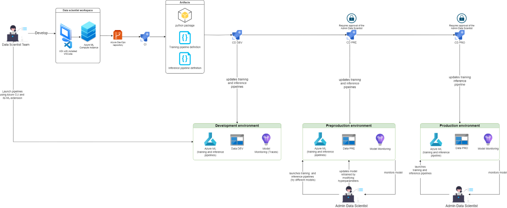
Objetivo general disenar, implementar y validar una solucion MLOps sobre Azure ML para modularizar, parametrizar y operativizar modelos financieros, mejorando trazabilidad, reproducibilidad y mantenibilidad del ciclo de vida.
Industrializar flujo completo con evidencia reproducible de train, infer y reporting.
Formalizar contratos y componentes para reducir arranque tecnico en nuevos casos.
Demostrar transferibilidad real sobre un segundo modelo financiero productivizado.
Definir una documentación técnica y una guia paso a paso para utilizar las plantillas
Alinear implementacion con estandar vigente de Azure ML y mantenimiento futuro.
Garantizar trazabilidad auditable desde la promocion hasta el registro de inferencias.
| M2N104 | Diseno de flujos de datos reproducibles y analisis avanzado adaptado al dominio financiero. |
|---|---|
| M2N110 | Arquitectura escalable, flexible y resistente para productivizacion en entornos regulados. |
| M2N111 | Automatizacion de pruebas, cambios y despliegues mediante CI/CD y pipelines AML. |
| CTFM01 | Documentacion, redaccion tecnica y defensa clara del trabajo ante tribunal. |
| CTFM02 | Integracion en entorno profesional, autonomia y coordinacion con negocio y plataforma. |
| CTFM03 | Reflexion sobre implicaciones sociales, operativas, regulatorias y economicas. |
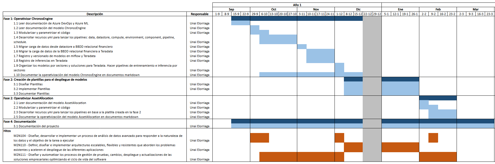
Orquestacion extremo a extremo desde versionado de codigo hasta trazabilidad operativa en datos corporativos.
Separar el código del modelo de los componentes que orquestan su ejecución para reducir acoplamiento, facilitar pruebas y reutilizar infraestructura.
Dividir el pipeline en componentes con responsabilidad única y mover la configuración fuera del código para mejorar mantenibilidad y trazabilidad.
Definir entradas, salidas y metadatos de cada componente, asociando versiones a cada ejecución para garantizar reproducibilidad y auditoría.
Registrar métricas, artefactos y configuraciones de cada ejecución para poder explicar desviaciones y reconstruir resultados.
DEFINICION OPERATIVA
Chronos Engine es un modelo que analiza índices de Renta Fija Privada (RFP) y evalúa si están caros o baratos comparando los niveles observados con las predicciones del modelo
Subtipos asociados
Subtipos asociados
Subtipos asociados
Subtipos asociados
Entrenamiento desacoplado por sector con registro trazable de metricas, hiperparametros y artefactos.
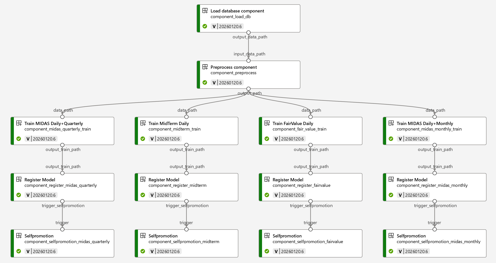
La inferencia diaria y la reconstruccion historica de backtest forman parte del lifecycle gobernado.
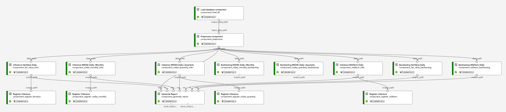
Salida operativa por sector para consumo recurrente en Tesoreria y Mercados.
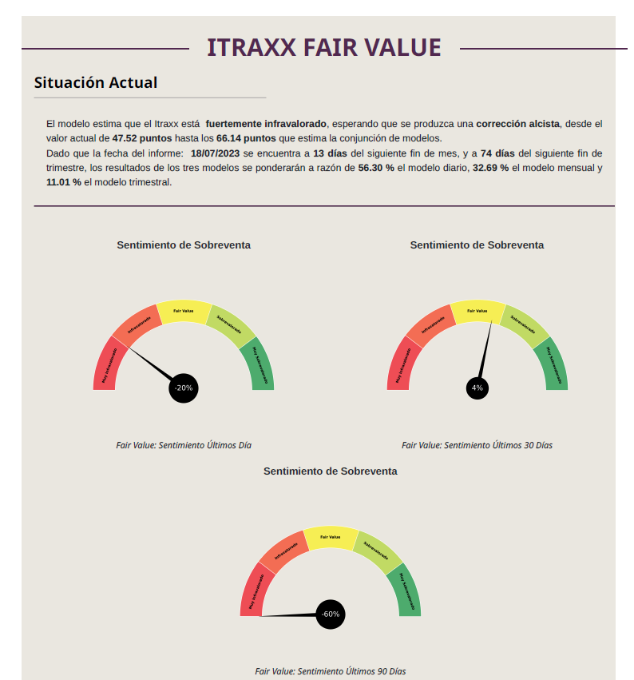
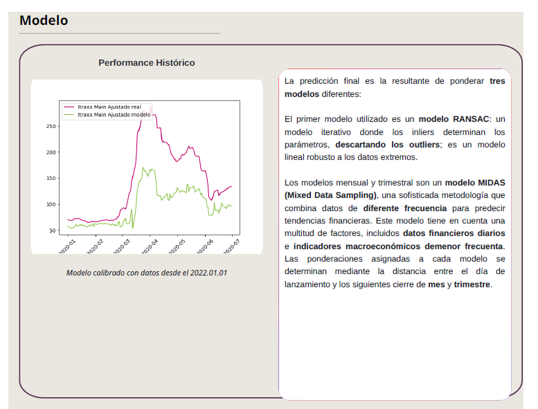
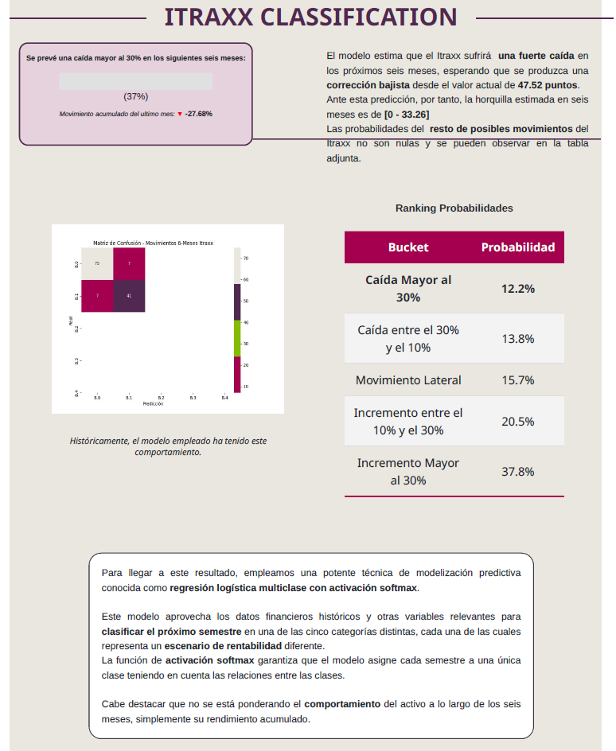
Consolidacion de inferencias desde Teradata para construir una vista global util y comparable.
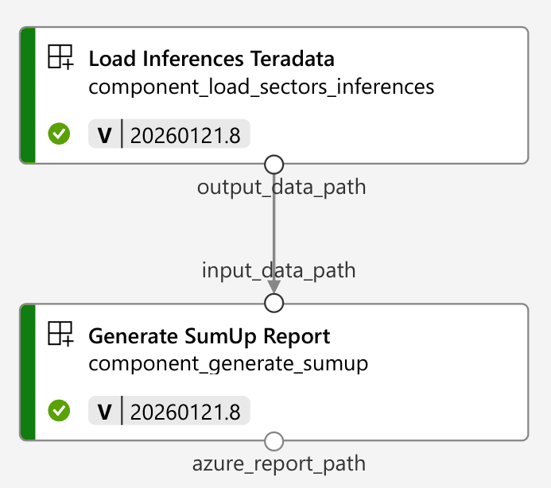
Entrega final consolidada para decision y reporting, incluyendo lectura de top movers en una unica salida operativa.
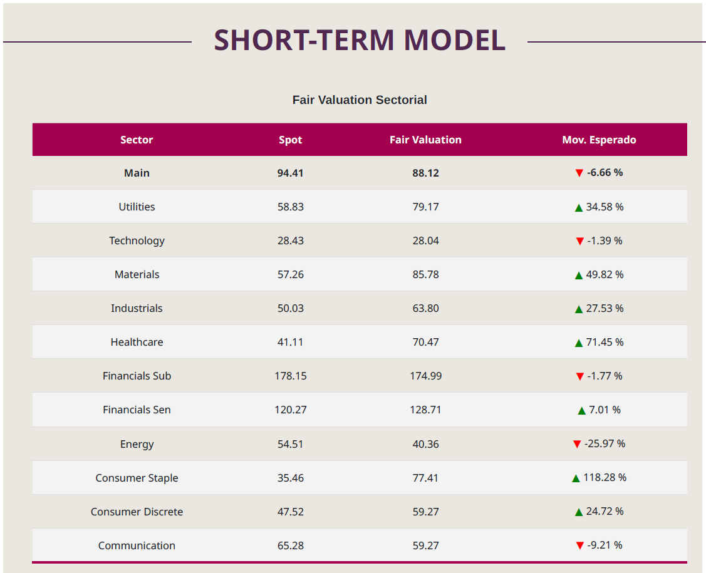
La mayoria del codigo de plataforma es reusable. Estandarizar evita arrancar desde cero en cada modelo nuevo.
Estructura base de repositorio y contratos.
Despliegue homogeneo por entornos y CI/CD.
Registro y gobernanza del lifecycle con MLflow + Teradata.
La logica de negocio del modelo.
Las features, algoritmos y reglas concretas.
Los KPIs funcionales del caso de uso.
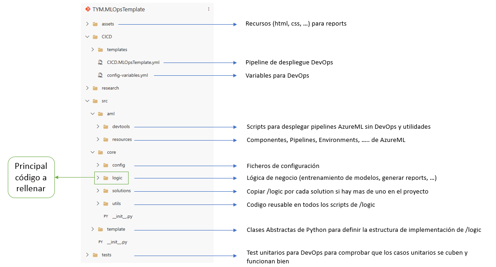
Reutilizacion inmediata de estructura tecnica entre casos.
CI/CD y contratos consistentes desde el inicio del proyecto.
Trazabilidad de lifecycle lista para auditoria y mantenimiento.
Modelo para asignacion de cartera por perfiles de riesgo en un entorno financiero regulado.
Generar inferencias operativas y validar que el estandar reusable del template se transfiere con bajo esfuerzo.
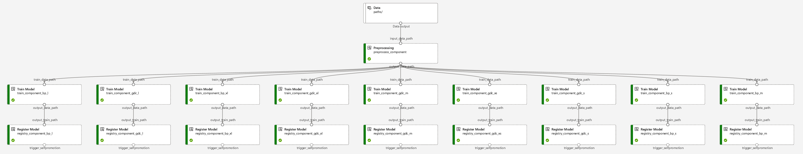
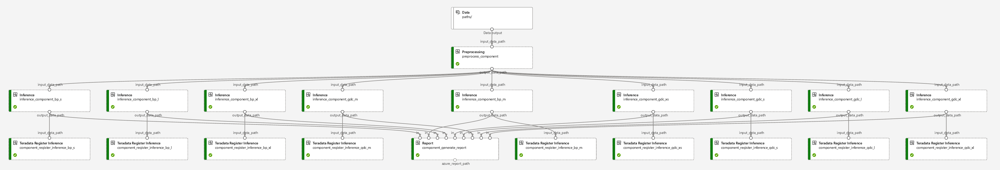
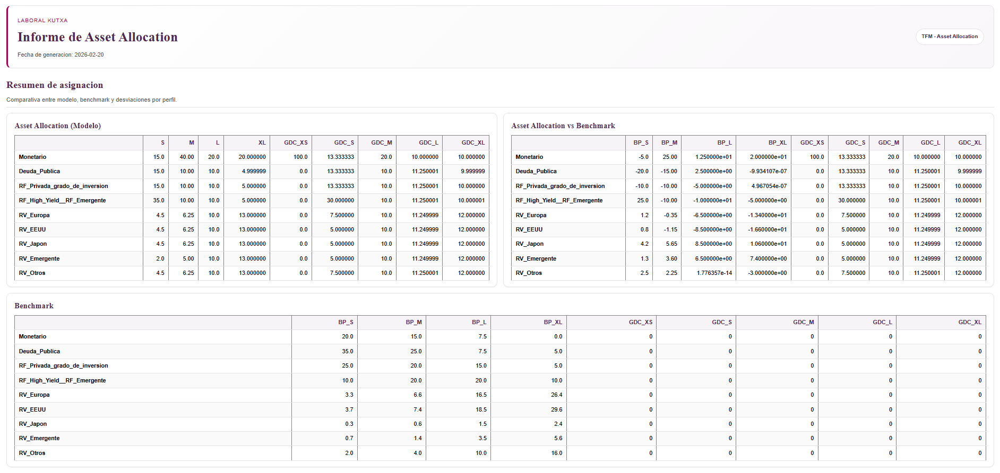
El codigo de modelo se encapsula en wrappers para registrar metadatos en MLflow y despues se aplica unwrapping controlado en inferencia.
La fuente corporativa de verdad de datos y estado operativo se consulta desde Teradata para evitar divergencias entre entornos.
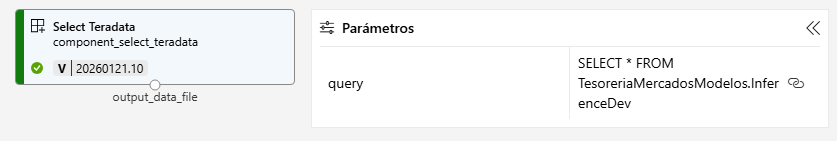
Se registran modelos, promociones e inferencias para disponer de evidencia auditable de cada ejecucion en produccion.
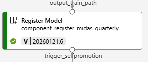
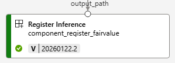
La jerarquia solution_id -> model_id -> version permite reconstruir de forma determinista que modelo genero cada inferencia.
Selfpromotion automatiza la elevacion de campeon entre entornos con criterios trazables y puntos de control definidos.
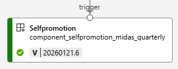
Ante incidencias, se habilita fallback manual hacia una version estable para mantener continuidad operativa con control de riesgo.
Resultados tangibles: 2 modelos productivizados, Plantillas
Trazabilidad y auditoría de ciclo de vida con registro en MLflow y persistencia en Teradata
Reducción de tiempos de arranque por reutilización de plantilla TYM.MLOpsTemplate y CI/CD homogéneo
Reducción de errores de integración gracias a contratos de datos y artefactos en YAML
Reutilización demostrada en segundo caso de negocio sin rediseñar la infraestructura base
Documentación operativa (README.md, USER-GUIDE.md, AZURE-DOCS.md) como soporte de transferencia y mantenimiento
| Norma | Alcance | Relevancia para el proyecto |
|---|---|---|
| RGPD (UE) 2016/679 | Proteccion de datos personales y derechos del interesado. | Minimizacion, trazabilidad del tratamiento y control de accesos en pipelines. |
| LOPDGDD 3/2018 | Adaptacion nacional en Espana del marco de privacidad. | Secreto fuera del codigo, gobierno de identidades y minimo privilegio. |
| AI Act / AIA (UE) 2024/1689 | Reglas de gobernanza y supervision para sistemas IA. | Auditoria de promotion, metadatos de modelo y supervision humana. |
| SR 11-7 (MRM) | Riesgo de modelo en contexto financiero. | Separacion de responsabilidades, validacion independiente y fallback. |
| NIST AI RMF 1.0 | Marco de gestion integral de riesgos en IA. | Controles preventivos/detectivos y mejora continua del ciclo operativo. |
Total directo imputado: 10.827,72 EUR.
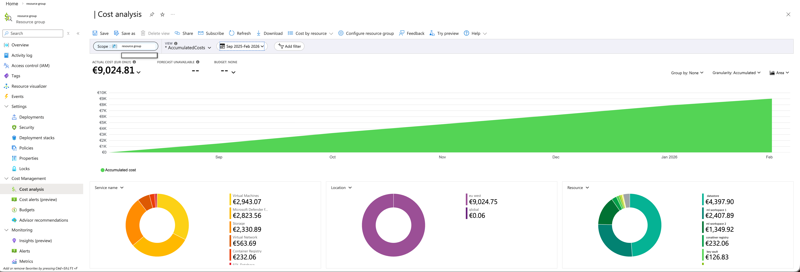
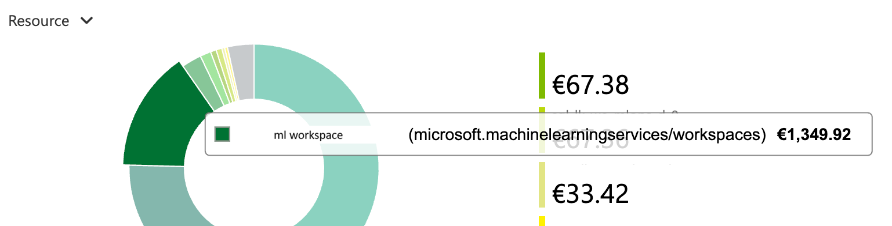
Coste directo trazable y valor operativo: menos esfuerzo incremental, mas control y mas reutilizacion.
No se presenta ROI monetario cerrado por falta de serie historica suficientemente larga.
| Objetivo | Cumplimiento |
|---|---|
| General | Se disena, implementa y valida una arquitectura MLOps reusable en Azure ML. |
| OE1 | Chronos queda operativizado end-to-end con train, inferencia y reporting trazables. |
| OE2 | Se formaliza TYM.MLOpsTemplate con contratos y componentes reutilizables. |
| OE3 | La transferibilidad se valida en Asset Allocation como segundo caso real. |
| OE4 | Se entrega documentacion tecnica y guia paso a paso de uso de plantillas. |
| OE5 | La implementacion migra y opera sobre AML SDK v2. |
| OE6 | Se garantiza trazabilidad auditable en Teradata para modelos e inferencias. |
| Competencia | Cumplimiento |
|---|---|
| M2N104 | Se construyen flujos reproducibles y analitica aplicada al dominio financiero. |
| M2N110 | Se disena una arquitectura escalable y mantenible para entorno regulado. |
| M2N111 | Se automatizan pipelines y despliegues mediante CI/CD en Azure ML. |
| CTFM01 | Se documenta y comunica tecnicamente el trabajo con evidencia clara. |
| CTFM02 | Se integra el trabajo en contexto profesional con negocio y plataforma. |
| CTFM03 | Se evalua el impacto social, regulatorio, operativo y economico del proyecto. |
* Entre chronos a asset ha habido una reduccion de 75% de tiempo de productivización y las plantillas pueden llegar a tener bastante impacto en la reducción de tiempos (sin evaluar las particularidades de cada proyecto).
En finanzas, el valor de un modelo depende de su capacidad de operar con control, evidencia y continuidad.
Unai Elorriaga Aramburu | Laboral Kutxa | 2025-2026
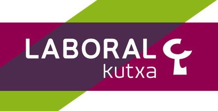